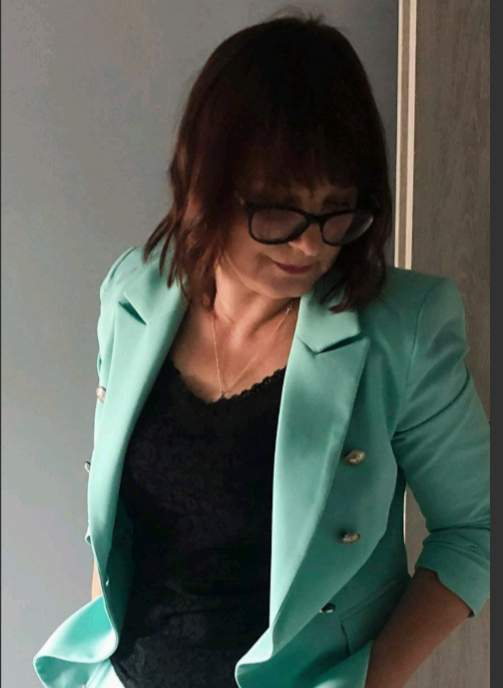

O Nas

Joanna Wilczewska
Psycholog kliniczny oraz logopeda. Jestem absolwentką Uniwersytetu Opolskiego ( kierunek: psychologia kliniczna). Doświadczenie zawodowe zdobyłam pracując z dziećmi oraz osobami dorosłymi u których zdiagnozowano całościowe zaburzenia rozwojowe. Oprócz zajęć terapeutycznych specjalizuję się również w diagnozowaniu dzieci u których podejrzewa się zaburzenia ze spektrum autyzmu.
Pracowałam także z młodzieżą zagrożoną marginalizacją społeczną (prowadziłam zajęcia terapeutyczne, profilaktyczne, byłam opiekunem na obozie młodzieżowym).

Anna Adamowska-Kałwa
Nazywam się Anna Adamowska-Kałwa i jestem pasjonatką pracy z dziećmi i młodzieżą. Ukończyłam Uniwersytet Opolski na kierunku pedagogika opiekuńcza i pracy socjalnej, a także szereg studiów podyplomowych, w tym Pedagogikę Opiekuńczo-Wychowawczą z Pomocą Psychologiczną, Przygotowanie psychologiczno-pedagogiczne i dydaktyczne oraz Integrację Sensoryczną - diagnoza i terapia dziecka, a także Edukację i rehabilitację osób z niepełnosprawnością intelektualną, autyzmem oraz zespołem Aspergera.
Moje doświadczenie zawodowe zdobywałam jako pedagog w szkole podstawowej oraz terapeuta dzieci i młodzieży w prywatnej placówce terapeutycznej w Nysie. Przez wiele lat współpracowałam z organizacjami pozarządowymi, wspierającymi rodziny, dzieci, młodzież oraz osoby pokrzywdzone przemocą w rodzinie. Pracowałam również z rodzinami zastępczymi, co skierowało moje zainteresowania naukowe na traumatyczne doświadczenia dzieci w pieczy zastępczej. W 2022 roku uzyskałam tytuł doktora nauk społecznych na Uniwersytecie Opolskim.
Aktualnie pracuję jako terapeuta SI, pedagog i pedagog specjalny w NZOZ w Niemodlinie. Prowadzę także Treningi Umiejętności Społecznych dla dzieci i młodzieży. W swojej pracy stawiam na kreatywność i innowacyjność, uwielbiam pracę w zakresie przetwarzania słuchowego, trening lateralny oraz pracę z emocjami dzieci. Moim celem jest zarażanie pasją moich małych pacjentów.